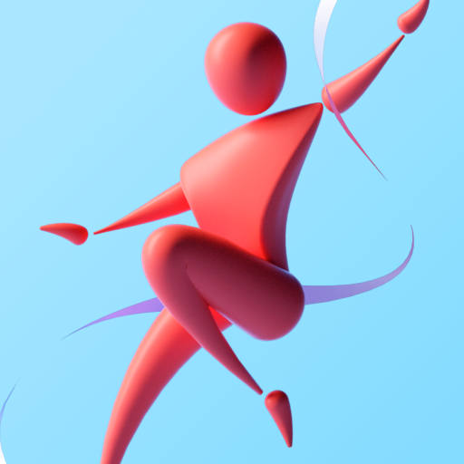
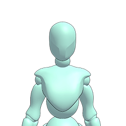

Posemaniacs
O Posemaniacs possui diversas opções de poses separadas por categoria para serem usadas de referência.

Magic Poser
Com o Magic Poser, o usuário pode controlar a pose livremente com um modelo 3D, adicionar luz ou verificar a biblioteca.

JustSketchMe
O JustSketchMe permite desenvolver poses por meio de um modelo 3D. Você pode baixar o APP ou usar pela web.
CharacterDesigns
O CharacterDesigns fornece fotografias de modelos gratuitas para serem usadas como referência para artistas.
Deviantart
Usuários do Deviantart disponibilizam poses para outros usuários, algumas são pagas e outras gratuitas para download.